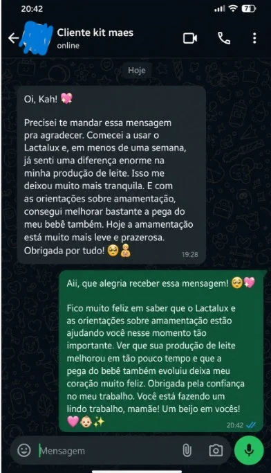

01
A amamentação virou medo
Você sente insegurança com pega, dor, leite, posição e não sabe mais em quem confiar.
Você só está exausta, cheia de dúvidas e tentando dar conta de tudo sozinha. Tenha acesso a um kit digital com apoio para amamentação, sono do bebê, primeiros cuidados e LactaLux, um suporte especial para mães que desejam melhorar a rotina de lactação com mais orientação.
Não é falta de amor. É excesso de cobrança, pouco sono, palpites demais e pouca direção simples para seguir.
Você sente insegurança com pega, dor, leite, posição e não sabe mais em quem confiar.
Um vídeo fala uma coisa, uma pessoa fala outra, e você termina mais confusa do que começou.
As noites difíceis vão acumulando cansaço e você começa a sentir que está no limite.
Você deseja melhorar a rotina de lactação, mas precisa de apoio educativo e organização.
Choro, febre, banho, engasgo, introdução alimentar e vacinação parecem grandes demais quando você está exausta.
Um material digital simples, organizado e acolhedor ajuda muito quando a dúvida aperta.
Dentro do Kit Completão, você recebe acesso ao LactaLux, um apoio digital com receitas, chás, protocolos e orientações educativas para mães que querem cuidar melhor da rotina de lactação e se sentir mais seguras durante a amamentação.
Apoio para mães que desejam melhorar a rotina de lactação
Aula prática sobre pega, posição e cuidados básicos.
Uma videoaula para mães que querem entender melhor pega, posição e cuidados básicos, com explicação simples para trazer mais segurança durante a jornada de amamentação.
A maternidade continua tendo desafios, mas quando você tem um caminho simples para consultar, fica mais fácil respirar, entender o próximo passo e parar de depender de palpites soltos.
Quero parar de me sentir perdidaA ordem foi pensada para o que mais pesa no começo: amamentação, lactação, sono do bebê e primeiros cuidados.
Apoio digital com receitas, chás, protocolos e orientações educativas para mães que desejam melhorar a rotina de lactação com mais organização.
Aula prática sobre pega, posição e cuidados básicos para uma amamentação mais leve, confortável e segura.
E-book para entender sono do bebê, sinais de sono, ambiente e formas de organizar uma rotina mais tranquila.
Informações educativas sobre primeiros socorros e primeiros cuidados com o bebê, para você agir com mais calma diante de imprevistos.
Guia para conduzir a introdução alimentar com mais clareza, calma e organização, respeitando a fase do bebê.
Material editável para organizar vacinas, consultas, registros de saúde e informações importantes do desenvolvimento do bebê.
Livro digital para registrar fotos, marcos importantes e memórias que passam rápido demais, sem precisar criar tudo do zero.
Porque uma única orientação clara pode evitar dias de insegurança, pesquisas confusas e aquela sensação de estar dando conta de tudo sozinha.
Em vez de procurar respostas aleatórias em vídeos, posts e comentários, você tem materiais organizados para consultar.
Um material de apoio à lactação para mães que desejam melhorar a produção de leite materno com mais orientação.
Amamente Sem Dor entra como apoio visual para entender melhor pega, posição e cuidados básicos.
O acesso é imediato e você tem 7 dias de garantia para avaliar se o kit faz sentido para sua rotina.
Dê prioridade aos prints sobre amamentação, leite, pega, LactaLux e segurança materna. Eles devem aparecer antes dos relatos de sono.
Relato sobre amamentação

Relato sobre LactaLuxRelato sobre sono do bebê
Resultados e experiências podem variar de mãe para mãe. O conteúdo é educativo e não substitui orientação profissional individual.
Em vez de continuar tentando descobrir tudo sozinha, tenha acesso hoje a um kit digital com apoio para amamentação, sono do bebê, primeiros cuidados e LactaLux, um suporte especial para mães que desejam melhorar a produção de leite materno com mais orientação.
Compre, acesse o conteúdo e veja se o material faz sentido para sua rotina. A garantia reduz o risco da sua decisão.
Respostas diretas para tirar as principais objeções antes da compra.
É digital. Você acessa pelo celular, computador ou tablet após a confirmação da compra.
O LactaLux reúne conteúdos educativos, receitas, chás e orientações de apoio para mães que desejam melhorar sua rotina de lactação. Cada corpo responde de uma forma, por isso o material não promete o mesmo resultado para todas e não substitui acompanhamento profissional.
Amamente Sem Dor é uma videoaula prática com orientações sobre pega, posição e cuidados básicos para apoiar sua jornada de amamentação.
Sim. O kit foi pensado para mães que estão lidando com amamentação, sono do bebê, primeiros cuidados, rotina, introdução alimentar e organização.
Não. O material é educativo e não substitui avaliação médica, pediátrica, nutricional, psicológica ou consultoria individual de amamentação.
Sim. Você tem 7 dias de garantia conforme as regras da plataforma de pagamento.
Tenha apoio, direção e materiais práticos para consultar quando a amamentação, o sono do bebê ou os primeiros cuidados parecerem difíceis demais.
Quero ver a oferta agora